Pictorial cancels in Quebec
We have recorded 69 pictorial cancels in this province. 45 are still in use and can be requested from the post office, in person or by mail.
In use (45)
 BP AnjouIrma Le VasseurActive · 2026–2035
BP AnjouIrma Le VasseurActive · 2026–2035 BP AnjouInterchangeActive · 2026–2036
BP AnjouInterchangeActive · 2026–2036 BP AnjouCityhallActive · 2026–2036
BP AnjouCityhallActive · 2026–2036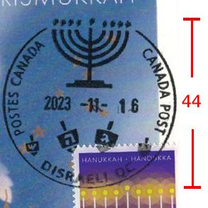
BP DisraeliHanukkah, Jewish festivalActive · 2021–present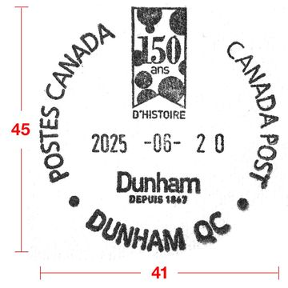
BP Dunham150 ans D'HISTOIRE / DEPUIS 1867Active · ?–present BP Montréal BJazzActive · 2016–2027
BP Montréal BJazzActive · 2016–2027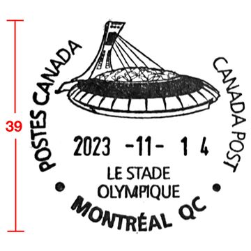
BP Montréal BStadiumActive · 2016–2027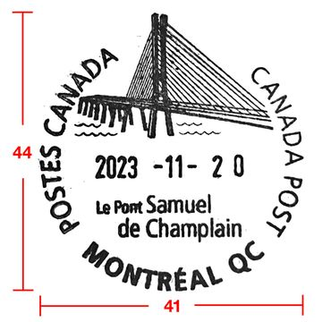
BP Montréal BChamplain bridgeActive · 2018–2029 BP Montréal BREMActive · 2024–2035
BP Montréal BREMActive · 2024–2035 BP Montréal CTriangleActive · 2023–2034
BP Montréal CTriangleActive · 2023–2034 BP Montréal CHeartActive · 2025–2034
BP Montréal CHeartActive · 2025–2034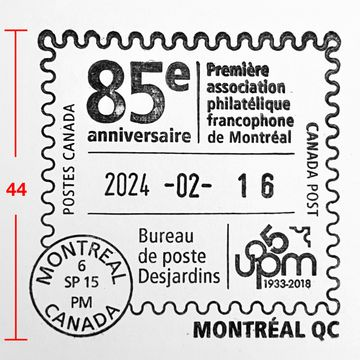
BP Montréal PL-DesjardinsPhilatelic associationActive · 2017–2028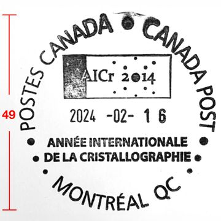
BP Montréal PL-DesjardinsCryistallographyActive · 2017–2028 BP Montréal PL-DesjardinsHeartActive · 2019–2030
BP Montréal PL-DesjardinsHeartActive · 2019–2030 BP Montréal PL-DesjardinsCaribouActive · 2019–2030
BP Montréal PL-DesjardinsCaribouActive · 2019–2030 BP Montréal PL-DesjardinsBeeActive · 2020–2031
BP Montréal PL-DesjardinsBeeActive · 2020–2031 BP Montréal Place d'ArmesFerris wheelActive · 2019–2030
BP Montréal Place d'ArmesFerris wheelActive · 2019–2030 BP Montréal Place d'ArmesChinatownActive · 2019–2030
BP Montréal Place d'ArmesChinatownActive · 2019–2030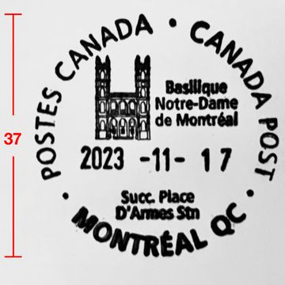
BP Montréal Place d'ArmesBasilicaActive · 2020–2031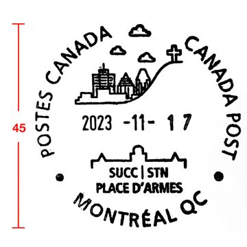
BP Montréal Place d'ArmesCityscapeActive · 2021–2032 BP Montréal Place d'ArmesBridgeActive · 2021–2032
BP Montréal Place d'ArmesBridgeActive · 2021–2032 BP Montréal Place d'ArmesFireworksActive · 2024–2034
BP Montréal Place d'ArmesFireworksActive · 2024–2034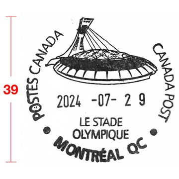
BP Montréal RosemontStadium (old)Active · 2015–2026 BP Montréal RosemontTrainActive · 2024–2031
BP Montréal RosemontTrainActive · 2024–2031 BP Montréal RosemontAngus towerActive · 2024–2031
BP Montréal RosemontAngus towerActive · 2024–2031 BP Montréal RosemontGardenActive · 2026–2035
BP Montréal RosemontGardenActive · 2026–2035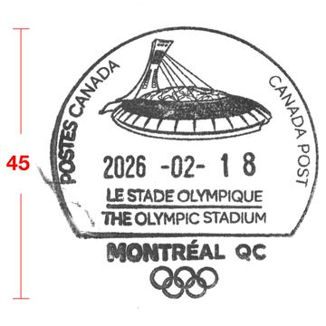
BP Montréal RosemontStadium (new)Active · 2026–2036 BP Montréal Succ St-DominiqueSDC PETITE ITALIE / MARCHÉ JEAN-TALON MONTRÉALActive · 2018–2029
BP Montréal Succ St-DominiqueSDC PETITE ITALIE / MARCHÉ JEAN-TALON MONTRÉALActive · 2018–2029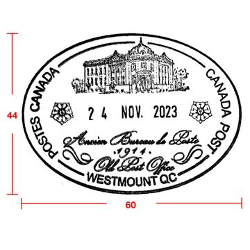
BP Montréal WestmountFrenchActive · 2019–2030 BP Montréal WestmountEnglishActive · 2019–2030
BP Montréal WestmountEnglishActive · 2019–2030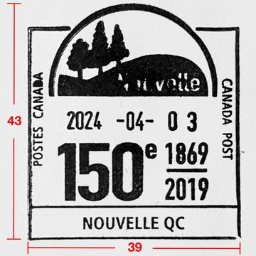
BP NouvelleLogoActive · 2017–2028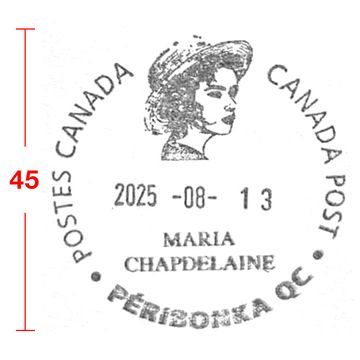
BP PeriobonkaMARIA CHAPDELAINEActive · ?–present BP Port DanielLighthouse, ship, heart shape, waveActive · ?–present
BP Port DanielLighthouse, ship, heart shape, waveActive · ?–present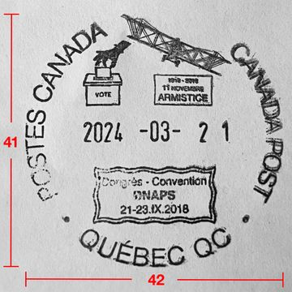
BP Québec Haute-VilleBNAPS 2018Active · 2018–2029 BP Québec Haute-VilleChâteauActive · 2019–2030
BP Québec Haute-VilleChâteauActive · 2019–2030 BP Saint-Jean-de-DieuConstruit en 1963 / Built in 1963Active · 2023–2034
BP Saint-Jean-de-DieuConstruit en 1963 / Built in 1963Active · 2023–2034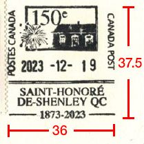
BP St-Honoré-de-Shenley150e / SAINT-HONORÉ-DE-SHENLEY QC / 1873-2023Active · 2023–present BP St-PamphileMooseActive · 2017–2028
BP St-PamphileMooseActive · 2017–2028 BP St-Valentin2026Active · 2026–2026
BP St-Valentin2026Active · 2026–2026 BP Ste-Luce Succ Sur MerEmpress of Ireland / 1914-2014Active · 2025–present
BP Ste-Luce Succ Sur MerEmpress of Ireland / 1914-2014Active · 2025–present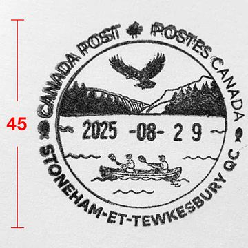
BP Stoneham-et-TewkesburyScenery at the Jacques-Cartier National Park: osprey, Laurentian mountains, forest, canoeingActive · 2025–present BP TadoussacWhaleActive · 2024–present
BP TadoussacWhaleActive · 2024–present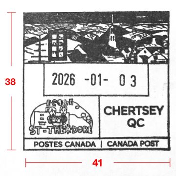
Chertsey CSPSchool logo of Ecole St-Theodore designed by the studentsActive · 2026–present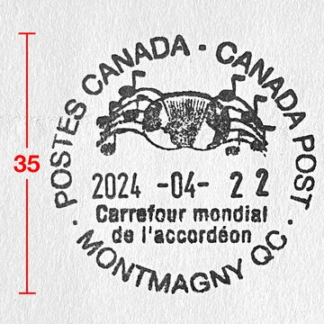
Montmagny Succ Bureau-ChefAccordionActive · 2016–2027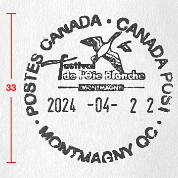
Montmagny Succ Bureau-ChefGoose 2025Active · 2025–2036
Retired (24)
 BP Montréal BCityscapeExpired · ?–?
BP Montréal BCityscapeExpired · ?–?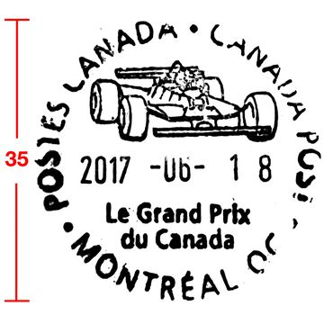
BP Montréal BF1Expired · 2006–2017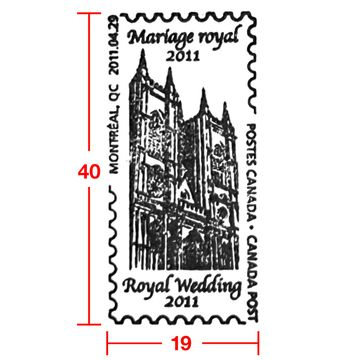
BP Montréal BRoyal weddingExpired · 2011–2011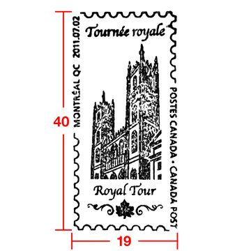
BP Montréal BRoyal tourExpired · 2011–2011 BP Montréal BChineseExpired · 2012–2023
BP Montréal BChineseExpired · 2012–2023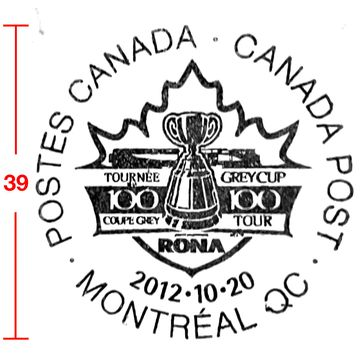
BP Montréal BGrey CupExpired · 2012–2012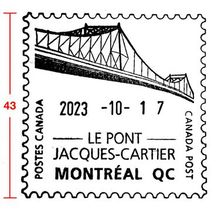
BP Montréal BJacque-Cartier bridgeExpired · 2014–2025 BP Montréal HA mari usque ad mare / Succursale HExpired · 2014–2025
BP Montréal HA mari usque ad mare / Succursale HExpired · 2014–2025 BP Montréal PL-DesjardinsMontreal 375Expired · 2014–2025
BP Montréal PL-DesjardinsMontreal 375Expired · 2014–2025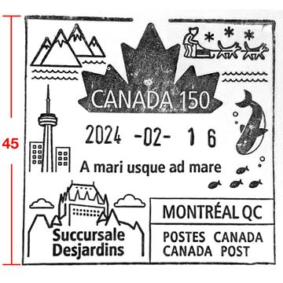
BP Montréal PL-DesjardinsCanada 150Expired · 2014–2025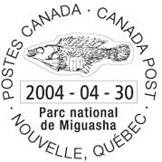
BP NouvelleFossilExpired · 2004–? BP Québec Haute-VilleHaunted CanadaExpired · 2011–2022
BP Québec Haute-VilleHaunted CanadaExpired · 2011–2022 BP Québec Haute-VillePost officeExpired · 2013–2024
BP Québec Haute-VillePost officeExpired · 2013–2024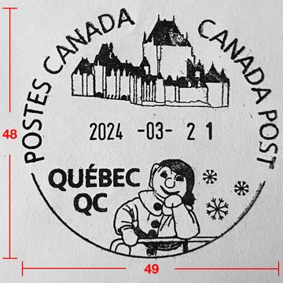
BP Québec Haute-VilleCarnavalExpired · 2014–2025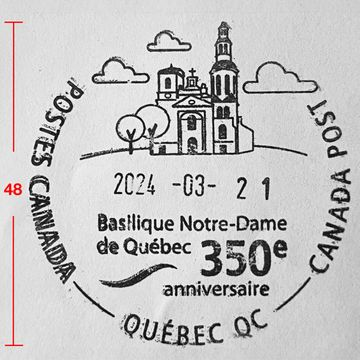
BP Québec Haute-VilleBasilicaExpired · 2014–2025 BP St-PamphileDogExpired · 2005–2016
BP St-PamphileDogExpired · 2005–2016 BP St-Valentin2012Expired · 2012–2012
BP St-Valentin2012Expired · 2012–2012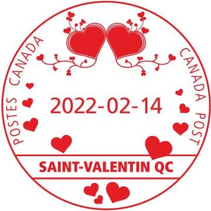
BP St-Valentin2022Expired · 2022–2022 BP St-Valentin2024Expired · 2024–2024
BP St-Valentin2024Expired · 2024–2024 BP St-Valentin2025Expired · 2025–2025
BP St-Valentin2025Expired · 2025–2025 BP WakefieldTrain à vapeur / Steam TrainExpired · 2003–?
BP WakefieldTrain à vapeur / Steam TrainExpired · 2003–?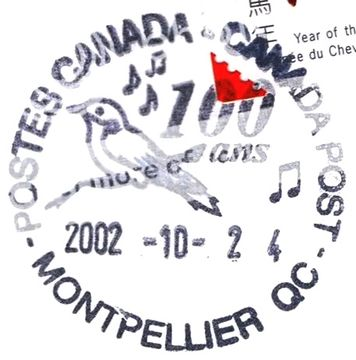
Marché Faubert100 ansExpired · ?–? Montmagny Succ Bureau-ChefGooseExpired · 2013–2024
Montmagny Succ Bureau-ChefGooseExpired · 2013–2024 Rivière-du-Loup Bureau-ChefCapital de Noël! 1er week-end de novembreExpired · 2014–2025
Rivière-du-Loup Bureau-ChefCapital de Noël! 1er week-end de novembreExpired · 2014–2025
Other provinces and territories: Alberta · British Columbia · Manitoba · New Brunswick · Newfoundland and Labrador · Nova Scotia · Ontario · Prince Edward Island · Saskatchewan · Northwest Territories · Nunavut · Yukon